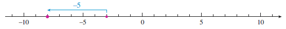
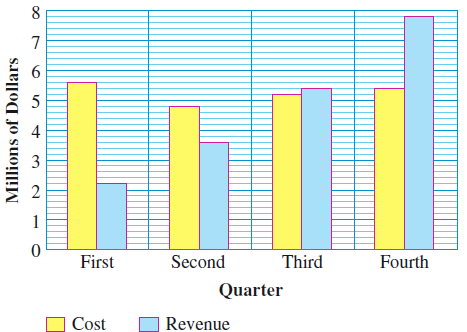
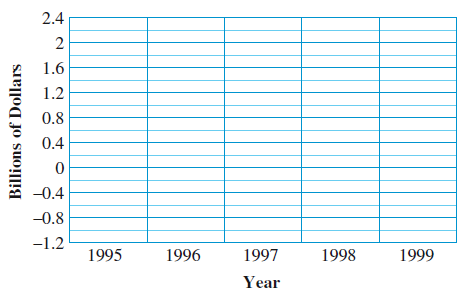
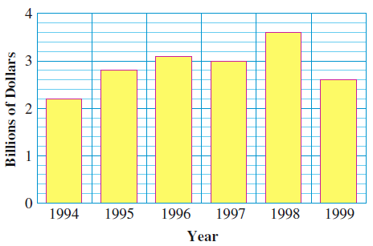
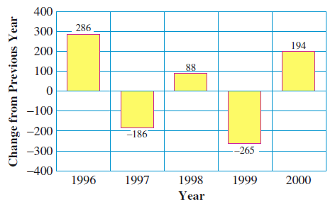
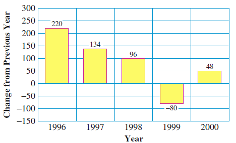

Now that you a good intuitive grasp of addition, well turn our attention to subtraction. It will help if you keep two facts in mind:
subtraction is the opposite operation for addition, and
there are only two directions to move on the number line, right or left!
So, consider:
To add a positive number, we move to the right on the number line.
To subtract a positive number, we move to the left on the number line.
To add a negative number, we move to the left on the number line.
To subtract a negative number, we move to the ????? on the number line.
Lets look at some examples.
Subsection7.2.1Subtracting a Positive Number
Compare the two number lines shown below. The first number line illustrates the addition problem
\begin{equation*}
(+8) + (-3)
\end{equation*}
The second number line illustrates the subtraction problem
\begin{equation*}
(+8) - (+3)
\end{equation*}
Both number lines look the same, and both problems have the same answer, +5. On each number line, we start at +8 and move 3 units to the left. This example illustrates an important fact.
Sutracting a Positive Number.
Subtracting a positive number is the same as adding the corresponding negative number. For both operations, we move to the left on the number line.
Of course, we dont need a number line to calculate simple subtractions like \(8-3\text{.}\) But number lines may help us with less familiar problems.
Definition.
Recall that the answer to an addition problem is called the sum, and the answer to a subtraction problem is called the difference.
Example7.2.1.
Use number lines to illustrate the sum or difference.
\(\displaystyle (-3)-(+5)\)
\(\displaystyle (-3)+(-5)\)
Solution.
We start at \(-3\) and move 5 units to the left.

We start at \(-3\) and move 5 units to the left.
Both problems have the same answer, \(-8\text{.}\)
Checkpoint7.2.2.
Use number lines to illustrate the problems below. The answers for each pair should be the same!
\((+2) - (+8) ~~~~\) and \(~~~~(+2) + (-8)\)
\((+9) - (+4) ~~~~\) and \(~~~~(+9) + (-4)\)
Answer.
\(\displaystyle -6\)
\(\displaystyle +5\)
Looking back at these examples, we see that we can rewrite a subtraction problem as an equivalent addition problem, then use the rules for addition.
Example7.2.3.
Rewrite each subtraction problem as an equivalent addition problem, and compute.
\(\displaystyle 6 - (+10)\)
\(\displaystyle -4 - (+3)\)
Solution.
Subtracting 10 gives the same result as adding \(-10\text{,}\) so we can write
To add two numbers with opposite signs we subtract their unsigned parts to get \(10 - 6 = 4\text{.}\) And because 10 is greater than 6, the answer is negative. Thus
To add two numbers with the same sign we add their unsigned parts to get \(4 + 3 = 7\text{.}\) And because both numbers are negative, the answer is negative. Thus
If you feel confident with adding signed numbers, with a little practice youll be able to do these subtraction problems in your head. Until then, dont hesitate to write down the calculation.
Checkpoint7.2.4.
Rewrite each subtraction problem as an equivalent addition problem, and compute.
\(\displaystyle 5 - (+9)\)
\(\displaystyle -3 - (+5)\)
Answer.
\(\displaystyle -4\)
\(\displaystyle -8\)
Subsection7.2.2Subtracting a Negative Number
What does it mean to subtract a negative number? Consider the problem
\begin{equation*}
2 - (-5)
\end{equation*}
If we use a number line to help us, we begin by plotting the first number, 2. We should then move five units away, but in which direction? Recall that when we add \(-5\text{,}\) we move to the left.
But there are only two directions on the number line, so when we subtract \(-5\text{,}\) we must move to the right. We finish the problem as shown below, to obtain an answer of \(+7\text{.}\)
Subtracting \(-5\) on the number line looks the same as adding \(+5\text{.}\) In both problems we move 5 units to the right, and in both problems the answer is 7.
Subtracting a negative number gives the same result as adding a positive number. For both operations, we move to the right on the number line.
Note7.2.5.
This fact makes sense if we think in terms of money, with negative numbers representing debts. Suppose you have a net worth of $200, after writing a check for $500 to repay a loan from your father. Then your father calls to say As your graduation present, Ive decided to cancel your $500 debt, so keep the money. You now have $700. Subtracting a debt of $500 has the same effect as adding $500 to your account!
Example7.2.6.
Use number lines to illustrate the sum or difference.
\(\displaystyle 6 + (+3)\)
\(\displaystyle 6 - (-3)\)
Solution.
We start at \(6\) and move 3 units to the right.
We start at \(6\) and move 3 units to the right.
Both problems have the same answer, \(9\text{.}\)
Checkpoint7.2.7.
Use number lines to illustrate the problems below. The answers for each pair should be the same!
\((-8) - (-2) ~~~~\) and \(~~~~(-8) + (+2)\)
\((-4) - (-7) ~~~~\) and \(~~~~(-4) + (+7)\)
Answer.
\(\displaystyle -6\)
\(\displaystyle +3\)
Putting together all our examples so far, we can see that:
Subtracting Signed Numbers.
Every subtraction problem can be written as an equivalent addition problem.
Subsection7.2.3Rule for Subtraction
We dont really have a new rule for subtraction. Instead, we change every subtraction problem to an equivalent addition problem, and then follow the Rules for Addition7.1.3.
Subtraction Rule for Signed Numbers.
To subtract a positive number, add the corresponding negative number.
To subtract a negative number, add the corresponding positive number.
So how do we change a subtraction problem into an addition problem? Here is a three-step process to follow if the problem is too complicated for an intuitive approach.
To rewrite a subtraction problem as an equivalent addition problem:.
Leave the first number alone.
Change the sign of the second number.
Change the subtraction symbol to an addition symbol.
Example7.2.8.
Rewrite each subtraction problem as an equivalent addition problem, then compute.
\(\displaystyle -4 - (+3)\)
\(\displaystyle -8 - (-12)\)
Solution.
Subtracting positive 3 is the same as adding negative 3, and we rewrite the difference as a sum as follows.
Now we can use the Rules for Addition. To add two numbers with the same sign we add their unsigned parts to get \(4 + 3 = 7\text{.}\) And because both numbers are negative, the answer is negative. Thus
Now we use the Rules for Addition: Because \(-8\) and \(+12\) have opposite signs, we subtract their unsigned parts to get \(12 - 8 = 4\text{.}\) And because 12 is larger than 8, the answer is positive. Thus,
Complete the table showing the net change in ratings for each of the networks.
Network
NBC
Fox
ABC
CBS
WB
UPN
Change in Rating
\(\hphantom{000}\)
\(\hphantom{000}\)
\(\hphantom{000}\)
\(\hphantom{000}\)
\(\hphantom{000}\)
\(\hphantom{000}\)
If we know the starting value and the net change in a variable, we can calculate its final value. The bar graph shows the change in annual sales for Solaria.com over six years.
In 2008, Solaria posted 4 million dollars in sales. What was its sales total in 2009?
Complete the table showing Solarias sales totals for the next five years.
Year
2010
2011
2012
2013
2014
Sales (million $)
\(\hphantom{000}\)
\(\hphantom{000}\)
\(\hphantom{000}\)
\(\hphantom{000}\)
\(\hphantom{000}\)
In which year did Solaria post its lowest sales total?
In which year did Solaria post its highest sales total?
Subsection7.2.4Notation
We have now used the symbol "\(-\)" in two different ways: to indicate subtraction and to denote a negative number. We will have to be careful not to confuse these two different meanings. So far, we have been careful to include the sign of a number inside parentheses, to distinguish it from the operation symbol for adding or subtracting. But you wont always be provided with these helpful hints. Consider the expression
\begin{equation*}
-8 - 13
\end{equation*}
We can read this expression as "negative 8 subtract 13." Or, changing to an equivalent addition problem, we get
\begin{equation*}
-8 + (-13)
\end{equation*}
You can check that both these expressions yield the same result, \(-21\text{.}\) After all, we perform subtraction by changing to an equivalent addition problem. So why not interpret \(~-8 - 13~\) as a sum in the first place?
That is what well do. When we see a string of numbers separated by plus or minus signs, well treat it as a sum of signed numbers. For example, the expression
\begin{equation*}
4 - 9 + 6 - 2
\end{equation*}
means "add \(4\) and \(-9\) and \(6\) and \(-2\text{,}\)" to get \(-1\text{.}\)
Example7.2.10.
Simplify the sum of signed numbers \(-3 - 6 + 4\)
Solution.
Working from left to right, first we add \(-3\) and \(-6\) to get \(-9\text{,}\) then we add \(+4\) to the \(-9\text{,}\) to get \(-5\text{.}\)
Checkpoint7.2.11.
Simplify each expression as a sum of signed numbers.
Revenue is the amount of money a company takes in from selling its product. They have to subtract their operating costs from their revenue to calculate their profit. If a companys costs exceed its revenues, their profit will be negative, which means that the company will experience a loss.
The bar graph shows GoSolars costs and revenues for the years 2011-2015.
Fill in the table with the values of revenue and cost from the bar graph.
Year
2011
2012
2013
2014
2015
Revenue
\(\hphantom{000}\)
\(\hphantom{000}\)
\(\hphantom{000}\)
\(\hphantom{000}\)
\(\hphantom{000}\)
Cost
\(\hphantom{000}\)
\(\hphantom{000}\)
\(\hphantom{000}\)
\(\hphantom{000}\)
\(\hphantom{000}\)
Profit
\(\hphantom{000}\)
\(\hphantom{000}\)
\(\hphantom{000}\)
\(\hphantom{000}\)
\(\hphantom{000}\)
Compute the companys profit for in each year and complete the table.
In which of the five years did the company lose money?
In which year did they make the largest profit?
What was the net change in their profit from 2011 to 2015?
Subsection7.2.5Vocabulary
sum
difference
net change
profit
revenue
cost
Exercises7.2.6Practice 7-2
Exercise Group.
For Problems 1-8,
Rewrite the subtraction problem as an equivalent addition problem.
Illustrate the problem on a number line.
1.
\(8-(-4)\)
2.
\(9-(+6)\)
3.
\(-3-(+8)\)
4.
\(-5-(-7)\)
5.
\(11-(+5)\)
6.
\(8-(-1)\)
7.
\(-9-(-2)\)
8.
\(-5-(-5)\)
9.
Explain why subtracting a negative number is the same as adding a positive number.
10.
Explain why we dont need any new rules for subtraction of signed numbers.
Exercise Group.
For Problems 11-24, subtract. Rewrite as an equivalent addition problem if that is helpful.
11.
\(12-(+3)\)
12.
\(5-(+11)\)
13.
\(-6-(+9)\)
14.
\(-8-(+4)\)
15.
\(-5-(+5)\)
16.
\(7-(+7)\)
17.
\(9-(-8)\)
18.
\(17 -(-20)\)
19.
\(-13-(+9)\)
20.
\(-12-(+19)\)
21.
\(-17-(+17)\)
22.
\(-16-(-5)\)
23.
\(-22-(-28)\)
24.
\(-30-(-30)\)
25.
Delbert participated in a student math competition at his school. There were three rounds of problem-solving. Delbert earns points for correct answers, but loses points for each incorrect answer. The bar graph shows Delberts results after three rounds.
Find Delberts score on each round.
The final score for each contestant is the sum of the scores on each round. Find Delberts final score.
26.
The bar graph shows the quarterly revenue and cost figures for Infocom, a new internet service provider.

Compute Infocoms profit for each quarter of the year.
Compute Infocoms profit for the entire year (the sum of its profits for each quarter).
Exercise Group.
Use a calculator to find the following differences in Problems 27-34.
27.
\(23.8-(-82.9)\)
28.
\(-18.3-(+74.1)\)
29.
\(-249-(-152)\)
30.
\(-453-(-826)\)
31.
\(0.012-(-0.39)\)
32.
\(0.39-(-0.012)\)
33.
\(-1.05-(0.15)\)
34.
\(-2.02-(-0.2)\)
35.
Read each expression aloud in English, then compute the values.
Consider the expression \(~16 - 4~\text{.}\) Should this expression be interpreted as 4 subtracted from 16, or as \(-4\) added to 16? Will both interpretations give the same value? Which do you prefer?
36.
Read each expression aloud in English, then compute the values.
Consider the expression \(~8 - 15~\text{.}\) Should this expression be interpreted as 15 subtracted from 8, or as \(-15\) added to 8? Will both interpretations give the same value? Which do you prefer?
37.
Read each expression aloud in English, then compute the values.
Consider the expression \(~-3 - 9~\text{.}\) Should this expression be interpreted as 9 subtracted from \(-3\text{,}\) or as \(-9\) added to \(-3\text{?}\) Will both interpretations give the same value? Which do you prefer?
38.
Read each expression aloud in English, then compute the values.
Consider the expression \(~-18 - 6~\text{.}\) Should this expression be interpreted as 6 subtracted from \(-18\text{,}\) or as \(-6\) added to \(-18\text{?}\) Will both interpretations give the same value? Which do you prefer?
39.
Write the expression \(~8 - 15~\) as an equivalent addition problem, and then as an equivalent subtraction problem.
Is it easier to compute \(~8 - 15~\) as a subtraction problem, or as an addition problem?
40.
Write the expression \(~-4 - 5~\) as an equivalent addition problem, and then as an equivalent subtraction problem.
Is it easier to compute \(~-4 - 5~\) as a subtraction problem, or as an addition problem?
Exercise Group.
For Problems 41-42, simplify each expression by treating it as an addition of signed numbers.
41.
\(\displaystyle -5-7\)
\(\displaystyle 5-7\)
\(\displaystyle -2-9\)
\(\displaystyle 2-9\)
42.
\(\displaystyle 8-11\)
\(\displaystyle -8-11\)
\(\displaystyle -4-9\)
\(\displaystyle 4-9\)
Exercise Group.
For Problems 43-56, add or subtract as indicated.
43.
\(13+(-5)\)
44.
\(-16+(-7)\)
45.
\(-27+(-13)\)
46.
\(28+(-15)\)
47.
\(35-11\)
48.
\(-15-20\)
49.
\(-40-30\)
50.
\(44-22\)
51.
\(-18+53\)
52.
\(-18-53\)
53.
\(-3-(-5)\)
54.
\(-3-5\)
55.
\(3-5\)
56.
\(3-(-5)\)
57.
The bar graph shows the value of U.S. exports to Venezuela for the years 19941999.
By how much did the exports change in 1995 compared with 1994? In 1996 compared with 1995? Fill in the table.
Year
1995
1996
1997
1998
1999
Change in exports (billion $)
\(\hphantom{000}\)
\(\hphantom{000}\)
\(\hphantom{000}\)
\(\hphantom{000}\)
\(\hphantom{000}\)
Make a bar graph showing changes in exports on the grid below. Use the table from part (a).

58.
The bar graph shows the value of U.S. exports to South Africa for the years 19941999.

By how much did the exports change in 1995 compared with 1994? In 1996 compared with 1995? Fill in the table.
Year
1995
1996
1997
1998
1999
Change in exports (billion $)
\(\hphantom{000}\)
\(\hphantom{000}\)
\(\hphantom{000}\)
\(\hphantom{000}\)
\(\hphantom{000}\)
Make a bar graph showing changes in exports on the grid below. Use the table from part (a).
59.
In 1995 the Boeing Corporation filled 468 orders for planes from commercial airlines. The bar graph shows the change in the number of orders for aircraft over the next few years.

Complete the table showing the number of commercial aircraft built by Boeing in each year.
Year
1996
1997
1998
1999
2000
Aircraft
\(\hphantom{000}\)
\(\hphantom{000}\)
\(\hphantom{000}\)
\(\hphantom{000}\)
\(\hphantom{000}\)
In which year did Boeing build the most airplanes?
60.
In 1995 Airbus Industrie filled 106 orders for planes from commercial airlines. The bar graph shows the change in the number of orders for aircraft over the next few years.

Complete the table showing the number of commercial aircraft built by Boeing in each year.
Year
1996
1997
1998
1999
2000
Aircraft
\(\hphantom{000}\)
\(\hphantom{000}\)
\(\hphantom{000}\)
\(\hphantom{000}\)
\(\hphantom{000}\)
In which year did Airbus first build more commercial airplanes than Boeing? (See Problem 59.)